Serveur CUPS (impression)
Objectif et environnement
Objectif
L’installation d’un serveur d’impression sur linux (SAMBA). Ce serveur est colocalisé avec le serveur de fichier.
Environnement
Matériels :
Dell PowerEdge r240 avec Proxmox 7.1-7
Adressage des VMS :
Réseaux : 172.28.0.0/16
Serveur SRV-UBU-SMB(SAMBA) : 172.28.1.202
Documentation
Processus
Pour l’installation nous avons utilisé le VM serveur de fichier ou SAMBA est déjà installé.
Configuration CUPS
apt install cups cups-client
Sauvegarder le fichier de configuration CUPS avant de le modifier :
cp /etc.cups/cupsd.conf /etc.cups/cupsd.conf.bkp
Le fichier cupsd.conf
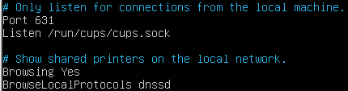
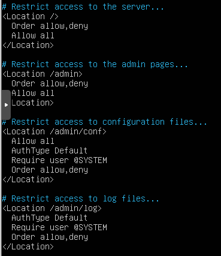
Ajout du serveur d’impression dans SAMBA
nano /etc/samba.smb.conf
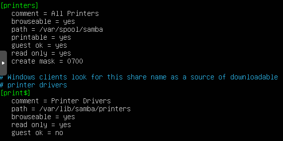
Redémarrer les services
systemctl restart cups smbd nmdb
L’administration du CUPS est accessible sur le port 631.

Ajouter une imprimante
Pour pouvoir tester l’imprimante du PEI, nous avons ajouté temporairement une carte réseau au VM dans le réseau 192.168.10.0/24 en dhcp.
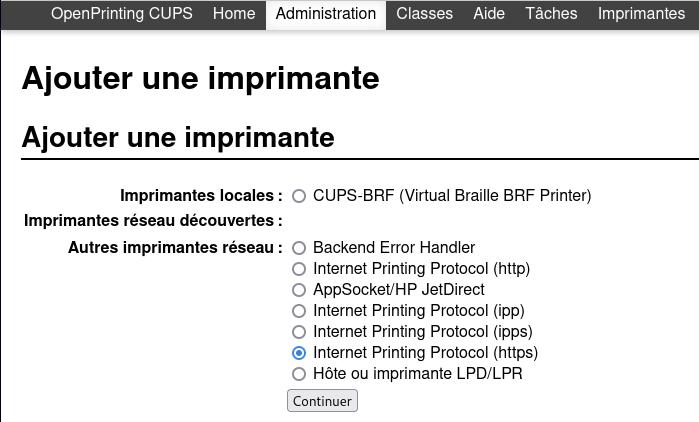
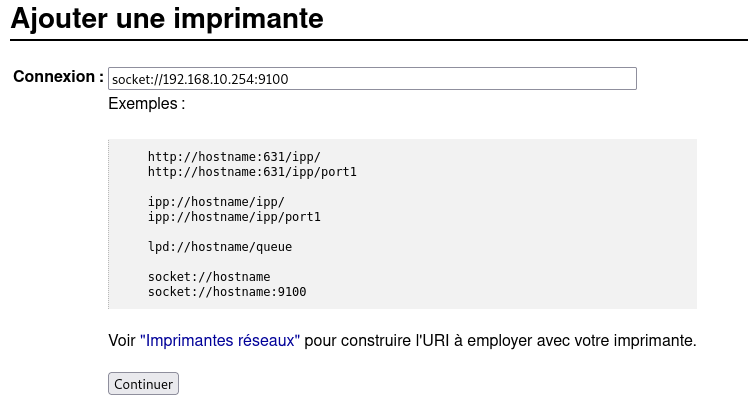
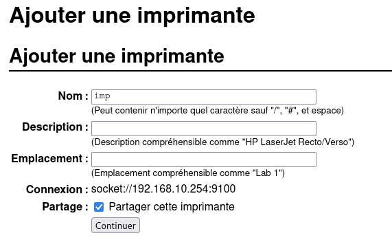
J’ai choisi une pilote générique, puis continuer
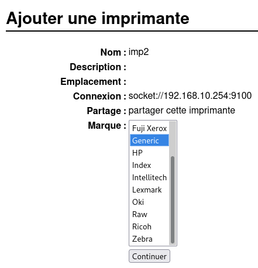
Choix PCL laser printer, puis ajouter une imprimante
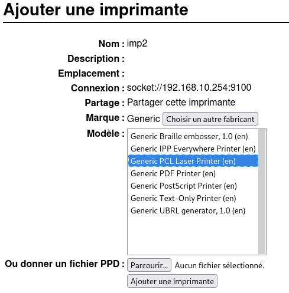
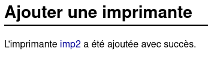
Pour tester, il suffit d’imprimer une page de test
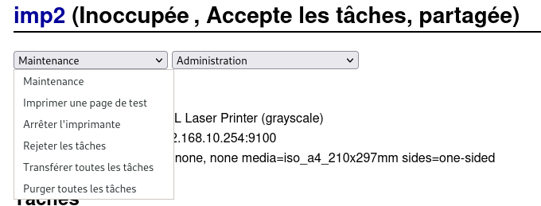
Ajouter une imprimante aux clients
L’imprimante partagée est automatiquement reconnue sur le réseau :
Linux

Windows
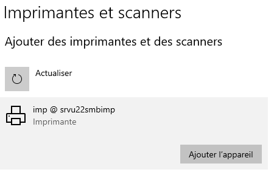
Intégrer le serveur d’impression dans Active Directory

NB : le procédé d’intégration est expliqué dans le chapitre Active Directory.
Conclusion
CUPS est un outil léger pour ajouter une imprimante en réseaux, néanmoins l’ajout de pilotes propriétaires peut être fastidieux.